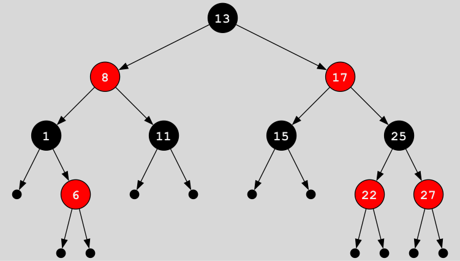

Background information
The purpose of this assignment is to get you comfortable working with algebraic datatypes in Haskell. To do this, you will be implementing a data structure called a red-black tree and you'll use it to implement a set data type. You'll see that once you've implemented a red-black tree, implementing set operations will be very simple.
A red-black tree is an ordered binary tree where all the elements are stored in the nodes and not the leaves. In addition, each node has a "color" which is either "red" or "black"; this will be used to make sure that the tree is balanced. A perfectly balanced binary tree has all the leaves at the same depth (distance from the root node), but we won't require that our trees be perfectly balanced, just "balanced enough". Having a balanced tree is very important, because if the tree is balanced the tree operations can all be done in \(\Theta(log\ n)\) time. If the tree is not balanced, some operations can take up to \(\Theta(n)\) time, which completely negates all the benefits of using a tree in the first place.
Let's be more specific. In Haskell, we'll define the tree using two datatypes:
-- A color is either red or black.
data Color = Red | Black
deriving Show
-- A red-black tree is either empty (a "leaf") or a tree node with a color,
-- two branches (both of which are red-black trees), and a value of type a.
data Tree a = Leaf | Node Color (Tree a) a (Tree a)
deriving Show
We see from the definition of the Tree datatype
that trees are parameterized around a type a.
We will be using integers as tree elements for testing,
but you can use this with any orderable type.
Note
The deriving Show part is just to make it possible
to display trees interactively in ghci.
The tree needs to obey these invariants:
- Order invariant
-
The elements (of type
a) are orderable. (Consequently, typeashould be an instance of the type classOrd.) All elements in the left subtree of a node are strictly smaller than the element stored in the node, and all elements in the right subtree of a node are strictly larger than the element stored in the node. (This also implies that there can be no duplicated elements in the tree.) - Red invariant
-
No red node has a red parent. (Leaves are considered to be black, so they can have either red or black nodes as parents.)
- Black invariant
-
Every path from the root node to a leaf contains the same number of black nodes. We will refer below to the distance from the root node to a leaf node; this means the number of nodes in such a path. More specifically, the distance from the root node to a leaf is the number of times you can go from a node to one of its branch nodes before you hit the leaf, starting from the root node. (For a particular node and leaf, there can be only one such path.)
The order invariant is simply the definition of an ordered binary tree, and applies to all such trees, not just red-black trees. The red and black invariants are what ensure that the red-black tree is balanced. By "balanced" we don't mean that all leaves must be exactly the same distance from the root of the tree, but that there is some constraint on the tree that guarantees \(\Theta(log\ n)\) performance for all tree operations. In this case, the red and black invariants guarantee that the longest path from the root node to a leaf is no more than twice as long as the shortest path. When you think about it, it makes sense: the shortest such path would be all black nodes, whereas the longest path would be alternating black and red nodes (since you can't have red nodes with red parents). Since all paths from the root to a leaf have the same number of black nodes, the shortest path would be half the length of the longest path. This is enough to guarantee \(\Theta(log\ n)\) performance.
Here is a diagram of a red-black tree of integers:

Note that in this diagram,
Leaf nodes are represented by the small black unlabelled circles
(leaves are considered to be black).
Also notice how the tree obeys all three invariants.
However, don't think that red-black trees
have to have alternating red and black nodes like this one does;
they can have more black nodes than red nodes,
or even have only black nodes in some cases.
Note also that each path from the root to a leaf
contains exactly three black nodes.
Here are the type signatures of the core red-black tree operations you will need to implement:
-- Return `True` if the given element is in the tree.
member :: Ord a => a -> Tree a -> Bool
-- Insert a new element into a tree.
insert :: Ord a => a -> Tree a -> Tree a
-- Convert a tree to a list.
toList :: Tree a -> [a]
-- Convert a list to a tree.
fromList :: Ord a => [a] -> Tree a
In addition, we want you to write several functions which will help in testing the correctness of your implementation, as well as helper functions that will be used in implementing the above operations. Details are given in the following sections.
One fundamental tree operation that we will not ask you to implement is removing an element from a tree. This turns out to be surprisingly complicated1, and would probably not increase your understanding of how to use algebraic datatypes in Haskell, so we're leaving it out.
Once you've implemented red-black trees, you will use them to implement sets. A red-black tree can be used as a set without changing it at all, but in addition to the operations given above, you will implement subset testing, set equality testing, union, intersection and set difference in terms of the fundamental tree operations. By using higher-order functions, you can implement all these operations in one line each.
-
At least, it's complicated if you do it purely functionally. This may be one reason why Haskell doesn't use red-black trees as the base type for the set and map types (in the libraries
Data.SetandData.Maprespectively); those are implemented using weight-balanced trees. ↩